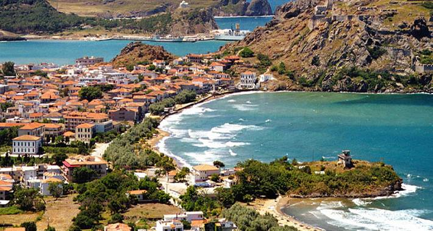

Why Limnos?
Lemnos, "the wind-ridden one".
Lemnos (or Limnos) is an Eastern Aegean island, located between Lesvos and Thassos.Strong winds are a feature of the island, especially in August and in winter time, hence the nickname.
For ancient Greeks, the island was sacred to Hephaestus, god of blacksmiths and fire, who fell on Lemnos when his father Zeus hurled him headlong out of Olympus. The local people too care of him, and in return he taught them the art of blacksmith